WEAPONS
Upon joining a game or visiting the change equipment menu in the VGUI, you will be presented with your choice of weapons and (depending on mode) items. This change will be reflected the next time you spawn. There are three possibilities for equipment choice. The restricted set lets you choose only a pistol or extra knives. The unrestricted set lets you choose a pistol; a unique weapon, extra pistols, or knives; and a unique item. Or, equipment may be unchoosable and randomized each time you spawn. Deathmatch uses a restricted set. Teamplay uses an unrestricted set. Last Man Standing may use any of the 3 modes. Remember that a server may disallow any of the available weapons and items. While you are playing any of these modes, you can drop a weapon or item and pick up a new one.
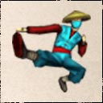 |
|
Kung Fu Mode / Kicks Kung Fu Mode is hand-to-hand combat. It is always available, and is your last resort when you run out of ammo and knives. Don't take it too lightly, however. A single punch will deal 20 points of damage! If your punch connects, you will be able to throw a second punch very quickly. Kung Fu is available under the weapon menu. Secondary fire in Kung Fu Mode will throw a kick, which does more damage then a punch and knocks back your enemy. Sometimes it will also knock away their weapon. Another option is the jump-kick. To jump kick an enemy, all you have to do is press the Jump button while you are next to him. This will cause you to lower your weapon for a second, and jump-kick him. Note: you can jump-kick any time, even when you have a gun or knife out! The target of your jump kick will take about 40 points of damage, and be knocked away from you. This is great fun when you find an enemy sniper standing on the edge of the roof. Just sneak up behind him and jump! He will most likely plummet to his death, and you will get credit for the kill! You can also spin-kick at any time by pressing Stunt and Jump at the same time. This is especially useful if you are going forward at the same time. However, if you are actually pressing Forward while you press Stunt, you will dive. You have to let go of Forward just before you press Stunt and Jump. You may also kick by pressing secondary fire while in Kung Fu Mode. Both Spin and Jump Kicks will knock your enemy back, and have a chance of knocking the weapon out of their hands. |
|
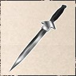 |
Knife The Knife is your basic slashing weapon. You always start with at least one, and you can pick up more from your slain enemies. Also, you can choose to start with 10 Knives as your starting weapon. You can only hold 10 Knives at a time, or 20 with a Bandolier. Knives can be used either for slashing or throwing. A knife slash will deal a heap of damage, and a thrown knife will usually kill instantly (unless you hit a leg or arm). When slashing with a knife, you want to aim for the neck and head for maximum damage. Also remember that like the punch, there is a delay between when you hit the button and when the slash executes. To switch between slashing and throwing mode, press secondary fire (Mouse 2 by default). Throwing a knife is considered something of an art by many AHL players. Like a rocket launcher, you have to lead your target if you want to hit them. This means aiming ahead of where they're moving, instead of where they are. Luckily, knife throws are not affected by accuracy considerations like movement and jumping. They always go the same way. However, since they are just thrown objects, they fall as they go, in an arc. This means that you will want to aim high for far away targets. Unlike rocket launchers, thrown knives don't have 'splash' damage, so you don't want to aim for the floor under your enemy. Hitting their legs could be a good thing, however. Since leg damage will cause them to limp and move more slowly, it will make them an easier target for your next shot. There are a few other properties of knives that are important. If a thrown knife misses it's target, it will stick in the wall behind it, and you can pick it back up. Thrown knives will not penetrate glass like bullets, but they will break it and fall to the floor for retrieval. Also, you can hold down the fire button to pull the knife back without throwing it. Thus, you can pull it back and then go looking for someone to throw it at. It takes about a second to pull it back, so this can be very useful for throwing quickly. Also, if you want to throw a knive during a dive, you have to pull it back before you initiate the dive. If you don't, you'll only be able to slash during the dive. |
||
|
Pistols Pistols play a large part in AHL. Many players use nothing but pistols, quite effectively! All pistols follow the accuracy rules outlined in the 'combat' section. One thing that makes pistols so potent is the 'akimbo' ability. If you pick up two Berettas, two Colt 1911's or two Colt SAA's, you can wield them both at the same time, for twice the clip size, and double the style! There are a total of five different pistols, and three can be used akimbo. However, you can only hold four pistols at a time (two torso holsters, two leg holsters). This means that you can have 2 pairs of akimbos, or 1 pair of akimbos and two others, or four different pistols. If you already have four pistols and want to pick up another that you've found, you can drop a pistol by pressing the drop weapon button. Pressing the drop weapon button will cause you to drop whichever weapon you currently have out. If you have akimbos out, both pistols will be dropped. You cannot hold more than 2 of the same pistol, and you can only hold one Desert Eagle and only one Magnum (carrying more then one would be a waste of space, since you can't use them akimbo). A word about reloading pistols: The Beretta, Colt 1911, and Desert Eagle are 'clip' guns, reloading is very fast, but any bullets left in a clip before you reload will be discarded. This means you want to empty your clip before reloading. The Colt SAA and the Anaconda, however, are revolvers. This means that no bullets are discarded when you reload. This difference is also reflected in the ammo readout. The clip guns show how many bullets you have left in your current clip, as well as how many clips you have remaining. The revolvers show how many bullets you have in the gun, and how many bullets you have 'in your pocket.' |
|||
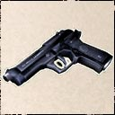 |
Beretta In addition to being the standard sidearm of the US Armed Forces, the Beretta is a favorite of John Woo, and is featured in such classics as 'Hard Boiled' and 'The Killer'. The Beretta does minimal damage, however, it compensates with a large clip (15), a high rate of fire, and the ability to be silenced. The Beretta makes a good sidearm for beginners because of its large clip and medium accuracy. The Beretta can be used in 'single shot' mode or 'automatic' mode. You can toggle between them by pressing secondary fire, the right mouse button by default. In single shot or semi-auto mode, each bullet must be fired by pressing the Fire button, Mouse1 by default. This will help your accuracy, but can be inconvenient for when you just want to put a lot of bullets in the air. This is where automatic mode comes in. Set to automatic, you can simply hold the Fire button down, and bullets will fly until your clip runs out. You can switch modes with Alternate Fire. |
||
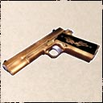 |
Colt 1911 Wielded by Nicholas Cage in 'Face/Off,' the Colt 1911 is a medium strength handgun, which can take down most enemies with a few shots. However the gun doesn't have a large clip like the beretta, so you have to carefully pick your targets. Like the Beretta, the Colt 1911 can be silenced. A laser sight makes this gun very accurate. Like the Beretta, you can choose either semi-auto or full auto mode. |
||
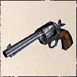 |
Colt SAA The Colt SAA (Single Action Army) is your typical Cowboy six-shooter, popularized by John Wayne. It is fairly powerful, and also rather accurate. However, reloading this gun is a one-bullet-at-a-time affair, and it can take quite a while to completely reload. Remember, you have to hold down the reload button to put more then one bullet it. Secondary fire for the SAA will cause you to fire very rapidly by fanning the hammer. |
||
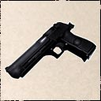 |
Desert Eagle Used by the Agents in 'The Matrix,' the Desert Eagle is the pride and joy of the Israeli army. This is the most powerful clip-pistol in AHL, and only the .44 Magnum does more damage per shot (although not by much!). The DE has a strong recoil, but good accuracy if you let the gun settle between shots. With the Desert Eagle, like the Beretta, you can choose either semi-auto or full auto mode. The high penetration of the Desert Eagle comes in handy too. |
||
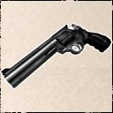 |
.44 Magnum The Magnum is the heavy hitter of the pistols. The Magnum is the single most powerful pistol available in AHL. It is also the most accurate. The downside is the slow rate of fire and low ammo capacity. Because every shot counts, the Mangum requires steady hands and a good bit of practice. Secondary fire will cause you to fire more quickly then normal. This will lower your accuracy, of course, but can be useful for panic situations at close range. This is a good long-range pistol, however, and can even be used as a sniping weapon if you have a laser sight (although there is no zoom). The Magnum also has high penetration, which is very useful. |
||
|
'Unique' Weapons Unique Weapons are called unique because you can only hold one at a time (unless you have a bandolier). For example, if you are carrying a Shotgun and want to pick up a Sniper Rifle, you will have to drop the Shotgun first, by pressing the 'drop weapon' button, which defaults to P. Whichever weapon you have out when you press the 'drop weapon' button will be dropped. In Deathmatch, there will be only a set number of each on a given map. That means that if a guy is killing you with the only Shotgun, and you want it, you have to kill him and take it out of his cold, dead fingers. This is also true in Last Man Standing without Equipment. In Last Man Standing with Equipment and Teamplay, you can choose which one to start with, regardless of other people's choices. This will usually mean that there will be multiple people carrying a Submachine Gun, for example. In Last Man Standing with Random Equipment, everyone is randomly assigned a weapon (there can still be multiple people with the same weapon, however) Akimbo pistols and Knives are not Unique in either respect, but you can choose to start with them instead of a Unique Weapon. The restrictions on Akimbos are discussed in the 'Pistols' section, and you can start with 10 Knives at a time, or 20 with a Bandolier. |
|||
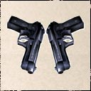 |
Akimbo Berettas Blessed with a high ammo count and average accuracy, Akimbo Berettas are a good selection for many players. There is nothing more stylish than rushing an enemy, both guns blazing. Additionally, they are the only akimbo pistols that can be equipped with silencers making them perfect for infiltration. The primary fire will let loose a steady stream of bullets that seem to last forever. This is good for whittling your enemy down if you can keep moving so they have trouble hitting you. Secondary fire will fire bullets out slower, and thus, with greater accuracy. This is good if you're fighting over a greater distance, and if you are trying to get headshots. Note, if you reload when you have exactly 15 bullets, you will only consume one clip, instead of the usual two. |
||
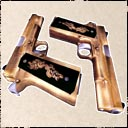 |
Akimbo Colt 1911's The Akimbo Colt 1911's are much like the Akimbo Berettas, but with smaller clips and more powerful shots. Like the Akimbo Berettas, primary fire will spit out bullets at a somewhat rapid pace, while the secondary fire will grant a more accurate, slower shot. Since you can't have akimbo lasers, a Bandolier or vest is recommended for use with the akimbo colts. Note: if you reload when you have exactly 7 bullets, you will only consume one clip, instead of the usual two. |
||
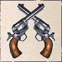 |
Akimbo Colt SAA's The Akimbo Colt SAA's will make you feel just like John Wayne. They are rather powerful, but often innaccurate. Like the single Colt SAA, the Akimbos take a long time to reload, so don't try it in the middle of a firefight. The primary fire is just like the other two Akimbo guns, and the secondary fire fires slower, and more accurately. Stealth slippers allow you to get close to your enemy, where the low accuracy is less of a problem. |
||
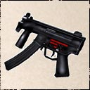 |
Submachine Gun One of Hollywood's favorites, the Submachine Gun is a very flexible weapon, useable for both close-combat and medium-ranged firefights. Even though a single shot isn't that deadly, the high amount of ammunition and high rate of fire makes it the preferred selection for many players. You will find that the Submachine Gun works well with all items. There are better weapons for specific instances, but the Submachine Gun is probably the most well rounded and flexible weapon. |
||
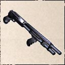 |
Shotgun As seen in 'Hard Boiled,' the Shotgun is the perfect close-assault weapon, thanks to its good fire rate, damage and ammo capacity. Victims won't stand a chance against its buckshot at close range, and it causes a fair amount of damage at medium range. However, the 'spread' of the pellets that each shell spits out widens over distance, so shooting an enemy from afar will only serve to annoy him. Since you want to be close to your victim, Stealth Slippers can be used to sneak in. Since it is done one shell at a time, reloading a Shotgun takes rather longer then most other weapons. Remember to hold down the reload button to get more then one shell! |
||
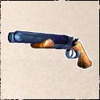 |
Hand Cannon As seen in 'The Road Warrior' and 'Desperado,' the Hand Cannon is a fierce weapon at close range. Basically a sawed-off 12-gauge shotgun, the Hand Cannon can fire one or two shells with enormous spread, but enormous power. A point blank shot from a Hand Cannon will not only kill your enemy, but also hurl him across the room! Unfortunately, this weapon is useless at long or medium range, so Stealth Slippers or Kevlar are advisable to allow you to get close to your prey. The Hand Cannon only holds two shells at a time, which can be fired simultaneously by pressing the primary fire button, or individually by pressing the secondary fire button. Reloading is a simple matter that takes about two seconds. |
||
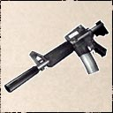 |
Assault Rifle As seen in many 'military' action movies, the assault rifle is best used for medium-ranged fire support. It's a bulky weapon, which decreases your movement capabilities when fired. While firing, you will only be able to move at a very slow pace. Furthermore, while diving, you will have reduced accuracy. Once you are prone, you will have improved accuracy, however. When you open fire, it will tear through your opponents with its high damage and good penetration. Also, the Assault Rifle can tear through walls, pillars, or most sorts of cover that the enemy may be cowering behind. As they say: you can run, but you can't hide from an Assault Rifle. Note: While using the assault rifle, your mouse sensitivity will be reduced to reflect the bulkiness of the weapon. |
||
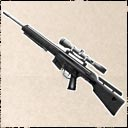 |
Semi-auto Sniper Rifle The Semi-auto Sniper Rifle offers both precision and a good fire rate. From a secure position you can pin down an enemy team easily, giving your team a good chance to rush them. Unfortunately you can run out of ammo very quickly, so conserve ammunition or choose a bandolier to get additional clips. Aim for the head if possible, as a chest shot won't always kill by itself. Secondary fire will change your zoom level. There are three levels of zooming, plus un-zoomed. Don't bother trying to snipe without zooming in, as you will have terrible accuracy. Silencing a sniper rifle is not a bad idea, since that will hide your muzzle flash and keep your location concealed. It allows you to miss without your target noticing. Don't fire while moving, though, as your shot will be completely off. You must be standing still and zoomed in to snipe accurately! Note: While using the sniper rifles, your mouse sensitivity will be reduced to reflect the bulkiness of the weapon. |
||
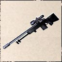 |
Bolt-action Sniper Rifle Featured in 'Saving Private Ryan,' the Bolt-action Sniper Rifle is a long-range expert's weapon. With most hits being fatal, the bolt-action sniper rifle is a very powerful weapon. But this power has its price, in most cases you have to take an enemy down with a single shot or you may be in big trouble. This makes the quick-drew Holster and Kevlar vest the player's best friends when using the rifle. A silencer can also be used to hide your muzzle flash, and thus, your location. As with the other sniper rifle, don't fire while moving, as your shot will be completely off. Also, don't bother trying to snipe without zooming in, as you will have terrible accuracy. You must be standing still and zoomed in to snipe accurately! Note: While using the sniper rifles, your mouse sensitivity will be reduced to reflect the bulkiness of the weapon. |
||
Weapon Restriction
It is possible in AHL to restrict weapons, so that certain ones cannot be used. This is done on a per-map basis, or can be done for all maps on a server. Every server can have a different set of restrictions. To set up restrictions for your server, simply make a *.wlf file, with the * being the name of the map. For instance, ahl_astorage.bsp would have a weapon restriction file called ahl_astorage.wlf. Open the wlf file in notepad, and put the weapons and items you want to remove from the map. The choices are listed below:
WEAPON_KNIFE
WEAPON_BERETTA
WEAPON_COLT
WEAPON_SAA
WEAPON_DE50
WEAPON_ANACONDA
WEAPON_HKMP5
WEAPON_M4
WEAPON_SNIPER
WEAPON_50CAL
WEAPON_ITHACA
WEAPON_HANDCANNON
WEAPON_AKIMCOLT
WEAPON_AKIMSAA
WEAPON_AKIMBOB
ITEM_FLASHLIGHT
ITEM_BANDOLIER
ITEM_LASER
ITEM_SILENCER
ITEM_NIGHTVISION
ITEM_VEST
ITEM_FRAG
ITEM_STEALTH
ITEM_HOLSTER
Put one per line. Empty lines are ignored. Note that single and akimbo pistols are restricted seperately. If your ahl_astorage.wlf looked like the list above, ahl_astorage would be a kung-fu only map on your server. To have a default weapon restriction, make a teams.wlf file.